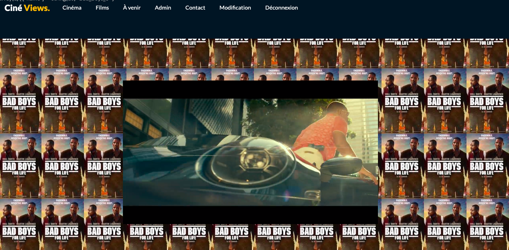
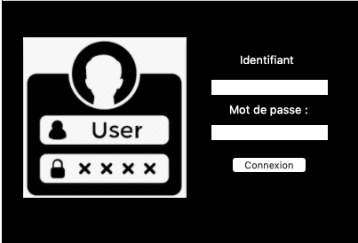
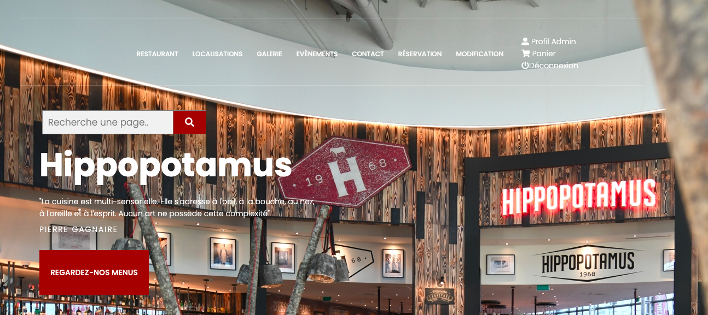

Sullivan SEXTIUS
Sullivan SEXTIUS
Présentation des PPE
VOUS Y RETROUVEREZ L'ENSEMBLE DES PRODUCTIONS CONCERNANT LES PPE QUE J'AI PU EFFECTUER
DURANT MON
BTS SIO OPTION SLAM
Qu'est ce que les PPE ?
Les PPE (Projets Personnalisés Encadrés) sont des travaux en groupe de 2-3 personnes. Ils permettent de mettre en situation les élèves selon des contextes qu'ils pourraient rencontrer dans le monde profesionnel. Le PPE 1 (au premier semestre du BTS SIO) est général, il n'est spécialisé dans aucune option. Cela permet de leur faire découvrir les deux options (SLAM & SISR).
PPE 1 - Première Année Semestre 1
Site de cinéma
- Participation à un projet d'évolution d'un SI (Solution applicative et d'infrastructure portant priotairement sur le domaine d'activité du candidat)
- Elaboration de docuements relatifs à la production et à la fourniture de services
- A1.1.1 : Analyse du cahier des charges d'un dervices à produire
- A1.1.3 : Etude des exigences liées à la qualité attendue d'un service
- A1.2.1 : Elaboration et présentation d'un dossier de choix de solution technique
- A1.2.3 : Evaluation des risuqes liés à l'utilisation d'un service
- A1.3.1 : Test d'intégration et d'acceptation d'un service
- A1.3.4 : Déploiement d'un service
- A1.4.1 : Participation à un projet
- A1.4.2 : Evaluation des indicateur de suivi d'un projet et justification des écarts
- A1.4.3 : Gestion des ressources
- A2.3.1 : Indentification,qualification et Evaluation d'un service
- A2.3.2 : Proposition d'amélioration d'un service
- A4.1.2 : Proposition d'une solution applicative
- A4.1.2 : Conception ou adaptation de l'interface utilisateur d'une solution applicative
- A4.1.3 : Conception d'une base de données
- A4.1.6 : Gestion d'environnement de développement et de test
- A4.1.8 : Réalisation des test nécessaires à la validation déléments adaptées ou développés
- A4.1.9 : Rédaction d'une documentation technique
- A4.1.10 : Rédaction d'une documentation d'utilisation
- A4.2.1 : Analyse et correction d'un dysfonctionnement, d'un problème de qualité
- A4.2.4 : Mise à jour d'un cahier des chagre
- A5.2.4 : Etude d'une technologie, d'un composant ou d'un outil ou d'une méthode
Compétence mis en oeuvre
Application JAVA service Eleve et Professeur
- Participation à un projet d'évolution d'un SI (Solution applicative et d'infrastructure portant priotairement sur le domaine d'activité du candidat)
- A1.1.1 : Analyse d'un cahier des chagres d'un service à produire
- A1.1.3 : Etude des exigences liées à la qualité attendue d'un service
- A1.2.1 : Elaboration et présentation d'un dossier de choix de solution technique
- A1.2.3 : Evaluation des risuqes liés à l'utilisation d'un service
- A1.3.1 : Test d'intégration et d'acceptation d'un service
- A1.3.4 : Déploiement d'un service
- A1.4.1 : Participation à un projet
- A1.4.2 : Evaluation des indicateur de suivi d'un projet et justification des écarts
- A1.4.3 : Gestion des ressources
- A4.1.1 : Proposition d'une solution applicative
- A4.1.3 : Conception ou Adaptation d'une base de données
- A4.1.5 : Prototypage de composant logiciel
- A4.1.7 : Développement, utilisation ou adaptation de composant logiciel
- A4.1.8 : Réalisation des tests nécessaire à la validation déléments adaptées ou développées
- A4.1.9 : Rédaction d'une documentation technique
- A4.1.10 : Rédaction d'un documentation d'utilisation
- A4.2.4 : Mis à jour d'une docuementation technique
- A5.1.2 : Recueil d'information sur une configuration et ses éléments
- A5.2.4 : Etude d'une technologie,d'un composant d'un outil ou d'un méthode
Compétence mis en oeuvre
Site de restauration
- Participation à un projet d'évolution d'un SI (Solution applicative et d'infrastructure portant priotairement sur le domaine d'activité du candidat)
- A1.1.1 : Analyse d'un cahier des chagres d'un service à produire
- A1.1.3 : Etude des exigences liées à la qualité attendue d'un service
- A1.2.1 : Elaboration et présentation d'un dossier de choix de solution technique
- A1.4.1 : Participation à un projet
Compétence mis en oeuvre
PPE 2 - Deuxième Année Semestre 1 & 2
Site HSP : Hôpital Site Web
- Participation à une projet
- A1.1.2: Etude de l'impact d'intégration d'un service sur le système informatique
- A1.1.3 : Etude des exigences liées à la qualités attendue d'un service
- A1.2.1 : Elaboration et prsentation d'un dossier de choix de solution technique
- A1.2.3 : Evluation des risques liées à l'utilisation d'un service
- A1.3.1 : Test d'intégration et d'acceptation d'un service
- A1.3.4 : Déploiement d'un service
- A1.4.1 : Participation à un projet
- A1.4.2 Evaluation des indicateurs de suivi d'un projet et justification des écarts
- A1.4.3 : Gestion des ressources
- A2.3.2 : Proposition d'amélioration d'un service
- A4.1.1 : Proposition d'une soltion applicative
- A4.1.2 : Conception ou adaptation de l'interface utilisateur d'une solution applicative
- A4.1.3 :Conception d'une base de données
- A4.1.6 : Gstion d'environnement de développemeny et de test
- A4.1.8: : Réalisation des tests nécessaires à la validation déléments adaptées ou développées
- A4.1.9 : Rédaction d'une documentation technique
- A4.1.10 : Rédaction d'une documentation d'utilisation
- A4.2.1 : Analyse et correction d'un dysfonctionnement, d'un problème de qualité
- A4.2.4 : Mise à jour d'une documentation technique
- A5.2.4 : Etude d'un technologie, d'un composant d'un outil ou d'un méthode
Compétence mis en oeuvre
© Portfolio.com | Site résalisé par SEXTIUS Sullivan